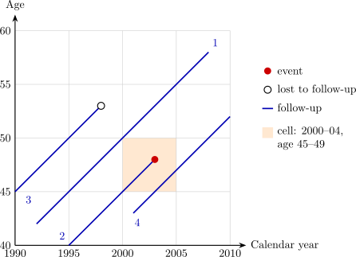

11.1 Time scales and the Lexis diagram
Every person in a follow-up study moves along three time scales at once: calendar time, age, and time since entry (since exposure began, diagnosis, or randomisation). Rates of most diseases depend strongly on age and often on calendar period, so person-time must be classified by both. The Lexis diagram (Figure 3) shows this: calendar time on one axis, age on the other, and each person as a line at \(45^\circ \), since age and calendar time advance together.

Splitting person-time
To compute rates by age band, each person’s follow-up is cut at the band boundaries. A woman born on 1 July 1950 who enters a study on 1 January 1990 (aged \(39.5\)) and is followed until 1 July 2003 (aged \(53\)) contributes \(0.5\) person-years at ages \(35\)–\(39\), \(5\) at \(40\)–\(44\), \(5\) at \(45\)–\(49\) and \(3\) at \(50\)–\(54\). An event is assigned to the band in which it occurs. Summing over people gives the person-years \(T_j\) and events \(D_j\) in each band, from which age-specific rates, standardised rates and SMRs (Section 8) follow. Splitting by calendar period as well, the cells of the Lexis diagram, is done the same way.
Questions on this section
Stuck on something here? Ask below and it stays attached to this topic.